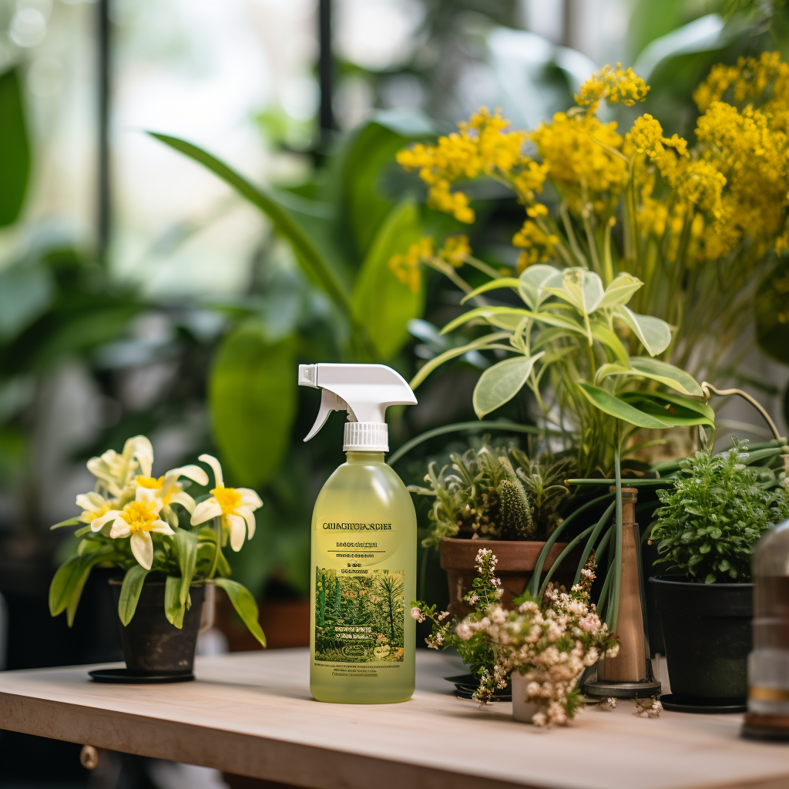
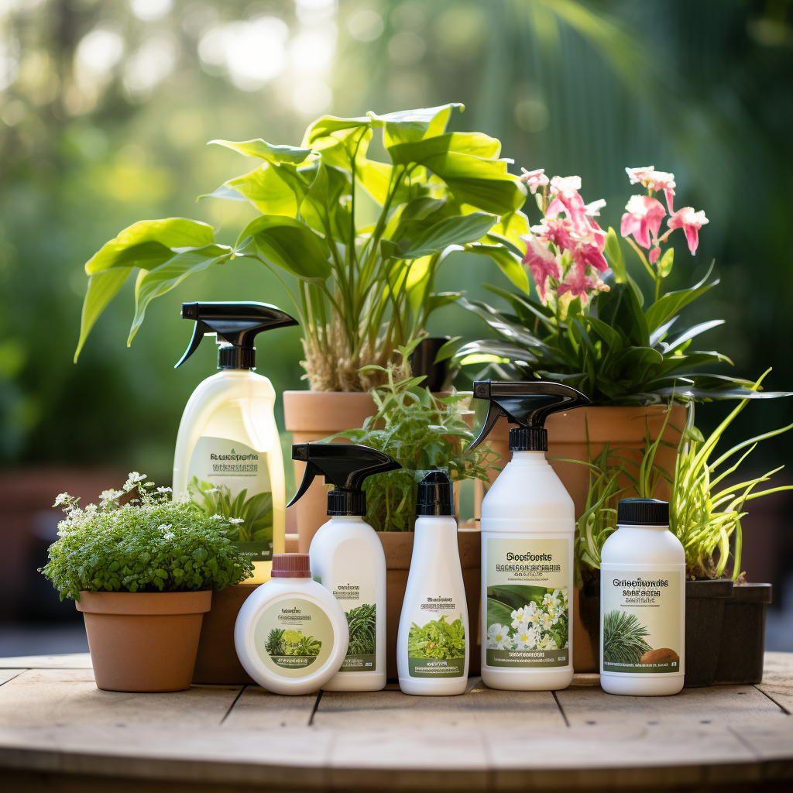
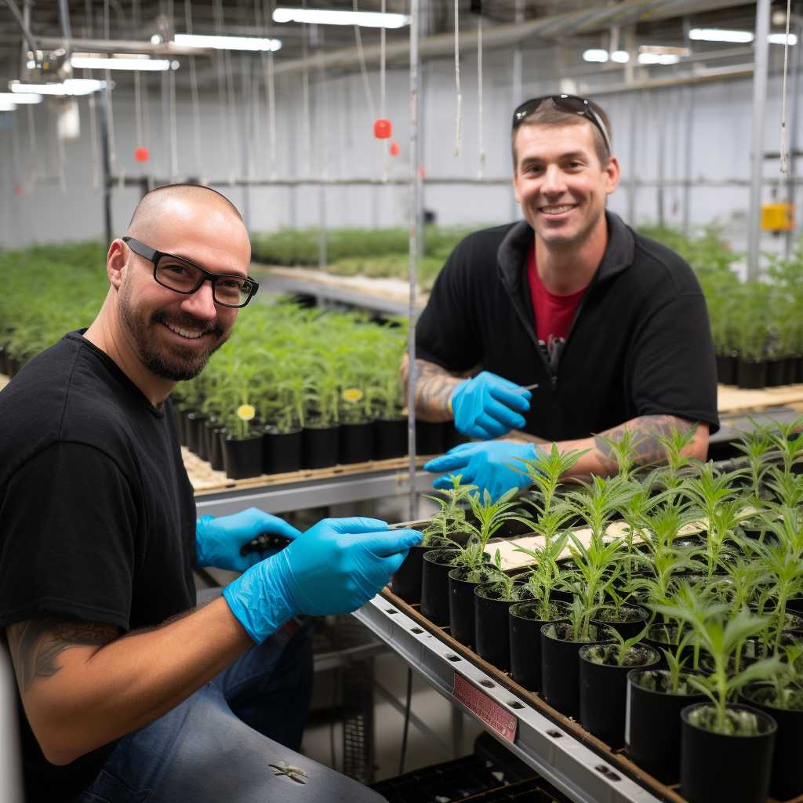

Green Thumb United Launches New Sustainable Plant Care Solutions
Green Thumb United, a leading plant care company, has announced the launch of a new range of scientifically-backed, sustainable solutions to help plants thrive both indoors and outdoors. The company's mission to help customers cultivate their green dreams is at the heart of this innovative product line.

Green Thumb United's Expert Team Revolutionizes Plant Care
With a team of highly skilled horticulturists and botanists, Green Thumb United is setting new standards in the plant care industry. Their real-world experience and deep understanding of plant needs have led to the development of unique care methods that ensure plant health and longevity.

Green Thumb United Introduces Comprehensive Plant Care Services
Green Thumb United is expanding its services to offer comprehensive plant care, from selection to ongoing maintenance. With decades of professional experience in plant care, landscape design, indoor gardening, pest control, and plant nutrition, the company is poised to make green dreams come true for plant enthusiasts.

Green Thumb United Debunks One-Size-Fits-All Plant Sales Approach
Rejecting the traditional sales-driven approach of many plant companies, Green Thumb United focuses on the suitability of plants for each customer's environment. This customer-centric approach has been praised for its consideration of individual plant needs and environmental factors.